Vanier AI was made in collaboration with the following partners:

This project was made with the help of the NovaScience program of the Quebec Government.

This work was made possible with the help of the Fond de recherche du Québec – Nature et technologies (FRQNT)

This work was supported by the Mitacs nonprofit-organization through the College-level Research Internship Award.